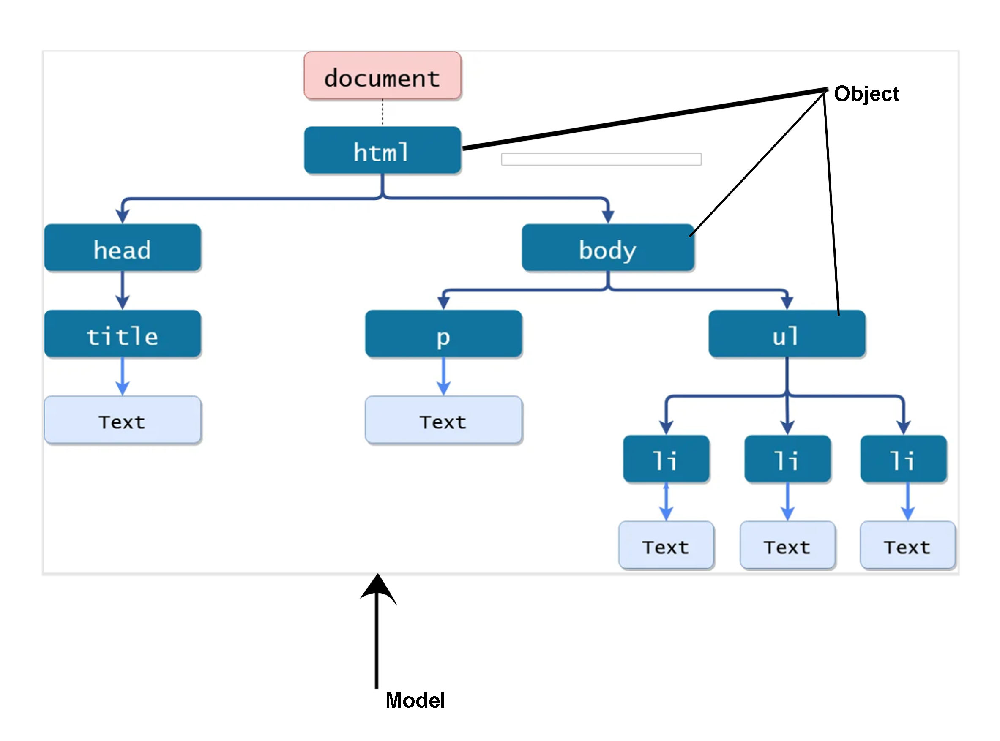
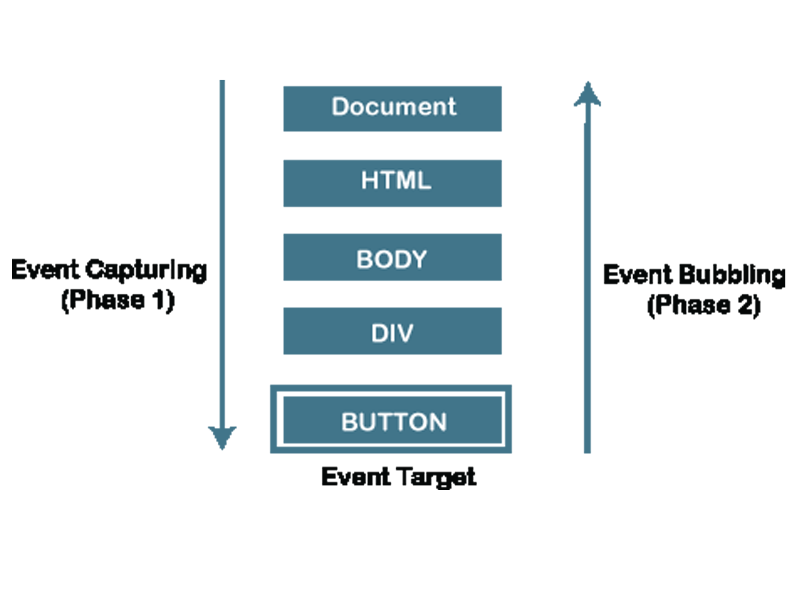

My Blogs
Ans: DOM (Document Object Model) is a Programming Interface for handling HTML Documents. When loaded the HTML docuemnts to web pages, at first HTML Documents coverted to the DOM Tree & Using DOM javascript can manipulate the HTML Elements easily. Javascript can add & remove new elements, change & remove style of an element, create events using DOM. In a single word, we can say-DOM is a programming interface which is use to interactive a web page.
Ans: There are 5 methods to select HTML DOM Elements.
Ans: when clicked on a content of an web site, browser at first capture top to lowest element (window->document->html->body.....) step by step and target/lowest element will be executed. Then browser check the nearest upper element, have any event handeler is there? If have it will be executed otherwise skip & check the next upper element at the same process. This process will be continue untill the most top element. In javascript this process is called event Bubble.
Ans: When a function received one another function as argument, then the function called callback function which is passed as argument and which function received that callback function is called higher order function. A callback function can run after a function has finished. We know javascript execute functions in sequencial. That means which function call at first that will be executed first. then other function executed.
But sometimes you need to control or break sequence the execution of a function that which function will be run at first. In this setuation we can use callback function.